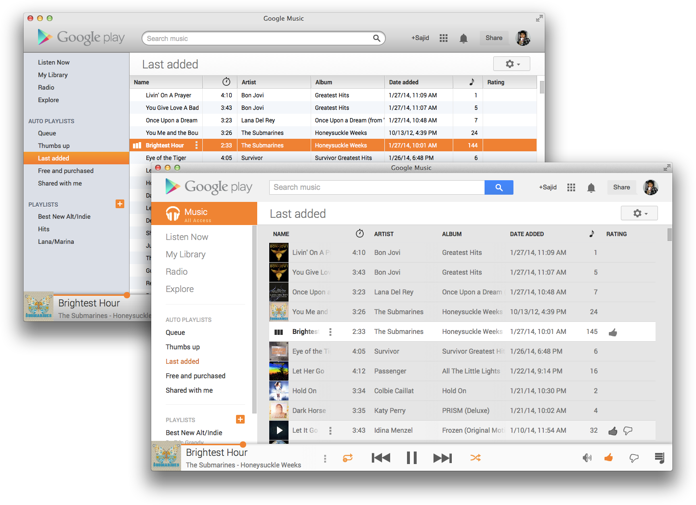

Google Music for Mac

Turn Google Music into a separate, beautiful application compatible with your Mac's media keys and including support for notifications.
Control your music without having to switch applications. Google Music for Mac responds to the media keys built into your Mac, allowing you to easily control the playback of your music no matter what you're doing.

Get notifications whenever the currently playing song changes.

Use the custom appearance built into Google Music for Mac to make it look beautiful and integrated into your system, or stick with Google's original theme.
